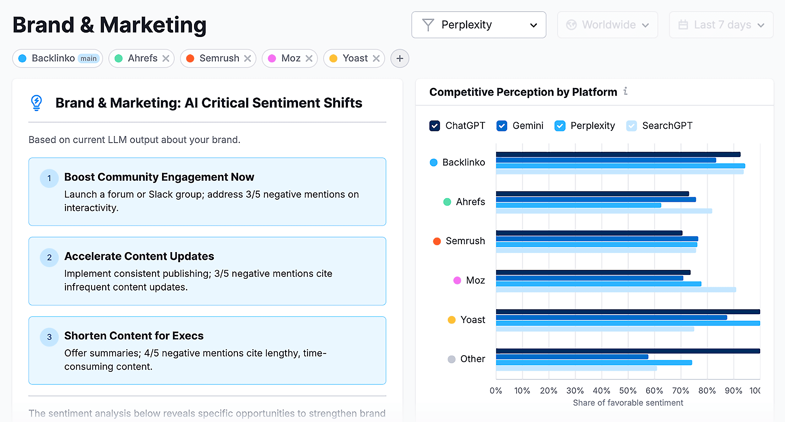

一、核心结论：GEO能交付的是诊断和改进系统
机构把GEO做成服务时，最重要的边界是先说清楚：可以交付诊断、策略、内容结构、证据修复、监测和报告，不能承诺某个AI产品在某天一定推荐客户。AI答案受模型、检索、上下文、用户问题和平台策略影响，机构不能把不可控变量包装成确定结果。
这并不会削弱GEO服务价值。恰恰相反，客户真正需要的是一套能持续降低误解、遗漏和错误归因的工作流。品牌是什么、适合谁、有哪些证据、哪些页面可访问、竞品为什么被提到，这些问题都可以被审计、修复和复盘。
因此，GEO服务应像专业咨询和内容架构项目，而不是像“排名代办”。交付物越清楚，客户越知道钱花在哪里；边界越透明，机构越能建立长期信任。
二、服务边界先讲清：哪些能做，哪些不能承诺

客户常会问三个问题：能不能让AI提到我，多久能看到变化，能不能压过竞品。机构不能回避这些问题，但回答必须诚实。能做的是提高公开信息的清晰度、完整性和可核验性，增加在相关问题中被正确理解的机会；不能做的是保证AI答案按合同出现。
服务边界应写进方案、报价和报告。比如数据采集覆盖哪些AI产品，是否包含联网模式，问题样本如何确定，竞品名单由谁确认，页面改版是否由机构执行，外部公关和第三方评价是否在范围内，客户内部资料是否能公开使用。
边界清楚后，GEO才不会沦为玄学。客户看到的是一组可以验收的工作：哪些页面被审计，哪些事实被修正，哪些内容补了证据，哪些问题里品牌描述从错误变成准确，哪些竞品差距仍需长期建设。
| 可交付 | 交付内容 | 不应承诺 |
|---|---|---|
| AI可见性审计 | 问题样本、品牌提及、引用来源、错误描述 | 某模型立刻稳定推荐 |
| 品牌实体梳理 | 名称、品类、对象、能力、证据和边界 | 模型永久记住品牌 |
| 内容结构优化 | 页面模板、FAQ、表格、案例和内部链接 | 每页都会被引用 |
| 证据链修复 | 案例、文档、资质、第三方来源和更新记录 | 外部平台必然采纳 |
| 复盘报告 | 趋势、问题、改进优先级和下期计划 | 把报告分数等同收入增长 |
三、套餐应该按成熟度分层，而不是按文章数量堆叠
很多机构会本能地把GEO套餐做成“写多少篇文章、监测多少个词、提交多少份报告”。这种报价容易理解，却可能偏离客户真实问题。一个品牌如果实体信息混乱，先写三十篇文章只会制造更多不一致；一个行业权威客户如果缺少引用页，重点也不是增加博客数量。
更合理的套餐分层，是按客户的AI可见性成熟度和业务风险来设计。基础包解决是否能被识别，中级包解决能否被准确描述，高级包解决能否在关键场景中与竞品做持续比较。每一层都要对应明确交付物和验收方式。
套餐还要允许组合。B2B SaaS 可能需要产品定义、替代品页和帮助文档修复；本地服务商需要门店、资质、评价和价格口径；媒体机构需要作者、栏目、版权和引用监测。GEO方法一致，交付重点应随行业变化。
| 套餐层级 | 适合客户 | 核心交付 |
|---|---|---|
| 基线审计包 | 刚开始关注AI搜索的企业 | 品牌诊断、竞品快照、问题清单、优先级 |
| 结构修复包 | 官网内容多但表达不稳定的企业 | 实体定义、页面模板、FAQ、案例证据修复 |
| 增长监测包 | 已有内容团队和SEO基础的企业 | 周期监测、竞品对比、内容计划、复盘报告 |
| 专项治理包 | 有误描述、合规或高风险品类客户 | 事实纠偏、资料库、审批流程、风险复核 |
四、标准流程从基线诊断开始
GEO项目不应从改标题开始，而应从基线诊断开始。机构先确认客户是谁、卖什么、希望被哪些人以哪些问题发现，再建立问题样本和竞品名单。没有这一步，后续数据很容易变成漂亮但无意义的图表。
基线诊断至少包含四类信息：品牌在AI答案中是否出现，出现时是否描述准确，被引用的页面和第三方来源是什么，竞品在哪些问题中占优。随后再回到官网、内容、技术和外部证据，判断差距来自页面不可访问、定义模糊、缺少案例，还是第三方来源不足。
执行阶段要有节奏。先修会造成误解的基础信息，再补高价值页面和证据材料，之后扩展问答覆盖和专题内容。这样做的好处是，客户能看到每一步的因果链：不是“写了内容所以应该变好”，而是“修正了某个信息缺口，观察某类问题是否更准确”。
- 确认业务目标、目标受众、重点场景和竞品名单。
- 建立问题样本，覆盖品牌、品类、比较、价格、风险和替代方案。
- 采集AI答案、引用来源、品牌描述、竞品出现情况和明显错误。
- 审计官网、文档、案例、结构化数据、第三方资料和内容缺口。
- 输出修复路线图，并标注客户、机构和第三方分别负责什么。
五、报告要让客户知道下一步做什么
GEO报告不能只给一个分数。客户看完报告后，应该知道哪些问题最影响AI理解，哪些页面要改，哪些事实要补证据，哪些竞品差距短期能修，哪些需要长期品牌建设。报告如果只展示截图和排名感，很难推动内部协作。
一份可交付报告建议分成六块：方法说明、基线数据、竞品对比、错误描述、页面与证据诊断、行动清单。方法说明要写清采集范围和限制，基线数据要保留原始问题和答案摘要，行动清单要能进入客户的内容、产品或公关排期。
人工复核也要写进报告。AI答案可能出现同名品牌混淆、引用过期页面、把竞品功能归到客户身上、把营销话术当事实等问题。工具可以提高效率，但事实判断和业务语境仍需要人来确认。
| 报告模块 | 客户要看到什么 | 交付价值 |
|---|---|---|
| 方法说明 | 问题样本、模型范围、采集日期、限制 | 让结果可复查 |
| 基线数据 | 提及率、引用来源、描述准确性 | 知道当前状态 |
| 竞品对比 | 谁被提到、为什么被提到、差距在哪 | 识别竞争机会 |
| 错误描述 | 错名、错类、错功能、旧信息 | 优先处理风险 |
| 行动清单 | 页面、证据、外部资料和负责人 | 推动执行 |
六、执行期交付要连接SEO、内容、公关和产品资料
GEO不是从SEO旁边长出来的一个孤立项目。Google 面向生成式AI搜索的官方建议仍强调高质量内容、可访问页面和基础SEO。Microsoft 与 OpenAI 的检索相关文档也说明，AI应用会通过语义搜索、关键词搜索和外部知识库获取资料。机构交付如果只改博客，不改资料源，效果会很有限。
执行期要把多个团队连起来。SEO负责抓取、结构、内链和页面模板；内容团队负责定义、FAQ、案例和专题；公关团队负责外部提及、媒体报道和第三方资料；产品团队负责功能文档、价格、集成和限制条件；销售团队提供真实客户问题。
机构的价值在于把这些资料整理成客户能维护的系统。比如统一产品定义库、案例证据库、FAQ问题库、竞品差异表、页面模板和月度复盘节奏。这样项目结束后，客户不是拿到一堆一次性文章，而是拥有一套可继续更新的AI可读知识资产。
七、复盘指标应看准确性、覆盖面和证据修复
GEO复盘不适合只看“出现次数”。更有意义的指标包括：品牌描述是否准确，品类归属是否稳定，关键场景是否被覆盖，引用来源是否更接近官方页面，错误信息是否减少，竞品差距是否在可解释方向收窄。
同时要保留不确定性。AI答案会波动，工具数据有采集范围，部分平台没有完整公开机制。机构报告应把趋势和行动建议分开：数据告诉我们哪里变化，人工复核告诉我们变化是否有业务意义，下一步计划告诉客户该修什么。
最终，GEO服务的复购不应靠制造焦虑，而应靠持续解决真实问题。客户如果能更准确地被AI描述，销售资料更统一，官网证据更清楚，竞品差距更可解释，这项服务就有了可交付价值。
- 看品牌是否被准确命名和归类。
- 看AI答案是否引用更可靠、更接近原始来源的页面。
- 看错误描述、过期事实和竞品误归因是否减少。
- 看内容、SEO、公关和产品资料是否形成可维护流程。
- 看报告建议是否进入客户的实际排期和验收清单。
合同和验收也要写进服务设计
机构最好把验收标准写成可检查事项，而不是结果口号。比如完成多少个核心页面审计，修复哪些品牌定义冲突，交付多少个页面模板，复核多少条AI答案，输出哪些优先级建议。这样客户验收的是工作质量和决策价值，不是某个不可控答案。
合同中还应说明客户配合项：是否提供产品资料、案例授权、专家访谈、后台数据、改版资源和法务审核。GEO常常牵涉多个部门，如果客户无法提供必要资料，机构也应在风险说明中提前写清。
参考文献
- Semrush Knowledge Base：AI Visibility Toolkit，https://www.semrush.com/kb/1493-ai-visibility-toolkit
- Semrush Knowledge Base：Brand Performance Reports，https://www.semrush.com/kb/1595-brand-performance-reports
- Lumar：AI Visibility Tracking Tools，https://www.lumar.io/ai-visibility-tracking-lumar/
- Google Search Central：Optimizing your website for generative AI features on Google Search，https://developers.google.com/search/docs/fundamentals/ai-optimization-guide
- OpenAI Docs：File search，https://developers.openai.com/api/docs/guides/tools-file-search
FAQ
Q1：GEO服务能不能承诺让客户被AI推荐？
不应承诺。机构可以提高品牌信息的清晰度、证据完整度和页面可访问性，也可以监测AI答案变化，但不能控制模型、检索结果和用户上下文。合规的承诺应落在交付物、改进动作和复盘机制上，并把不可控因素提前写进方案和合同。
Q2：GEO套餐应该按月卖还是按项目卖？
两种都可以。首次合作适合项目制审计和结构修复，范围清楚、便于验收；后续监测、内容更新和竞品复盘更适合月度服务。关键是每个周期都有明确输入、输出、责任人和限制说明，避免客户把长期建设误解成一次性投放项目。
Q3：机构需要自己开发AI监测工具吗？
不一定。机构可以先使用成熟工具、表格和人工复核建立方法，等客户规模和数据需求稳定后再开发内部系统。工具只是采集和整理手段，真正影响交付质量的是问题样本、业务判断和可执行建议。过早自研反而可能分散服务能力。
Q4：GEO和SEO服务会不会互相冲突？
通常不会。GEO需要可抓取页面、清晰标题、稳定内链、可靠内容和结构化表达，这些也属于SEO基础。差异在于GEO更关注AI答案中的品牌描述、引用来源、语义归类和证据链，而不只看排名和流量。两者适合共用底层资料和内容流程，并同步复盘。
Q5：客户没有内容团队也能做GEO吗？
可以，但服务范围要调整。机构可以先做品牌定义、核心页面、FAQ、案例模板和销售资料整理，帮助客户建立最小知识资产。没有内部维护能力时，不建议一开始做大量内容扩张，否则后续更新和事实校对会跟不上，也会增加错误信息风险。
Q6：GEO报告里的分数重要吗？
分数可以辅助沟通，但不应成为唯一结论。更重要的是分数背后的证据：哪些问题没有出现品牌，哪些答案描述错误，哪些竞品被引用，哪些页面缺少信息。报告要能推动下一步动作，而不是停在仪表盘展示。客户更需要优先级和负责人。
Q7：机构如何避免GEO服务被客户理解成玄学？
最有效的方法是把方法、样本、限制和交付物写清楚。每一项建议都对应可检查页面、证据或问题样本，并说明哪些结果不可保证。客户能看到输入和输出之间的关系，GEO就会更像专业服务，而不是黑箱承诺，也更容易持续投入。